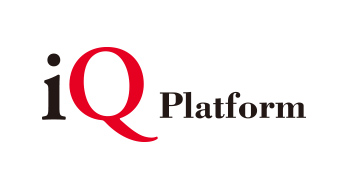
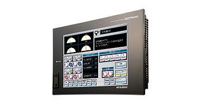
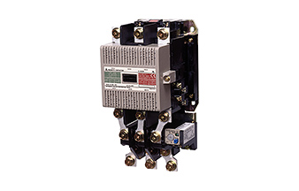
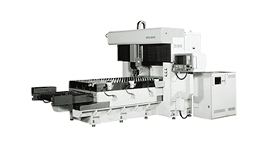
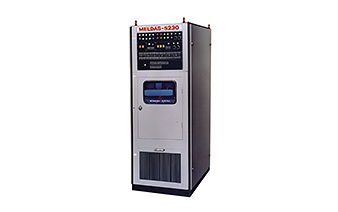
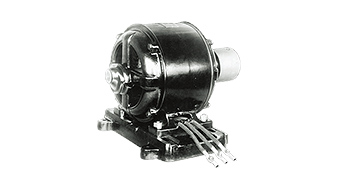

Kontribusi FA terhadap sejarah Mitsubishi ElectricKontribusi FA Sejarah Tentang Kami

FA: Terus berubah menjadi lebih baik
Mitsubishi Electric merayakan hari jadinya yang ke-100 pada bulan Februari 2021. Bisnis Otomasi Pabrik telah menjadi bagian penting dari kisah sukses tersebut selama hampir selama itu. Berikut ini adalah beberapa hal penting dalam otomasi pabrik selama beberapa tahun terakhir:
2010s
- 2019
- Merilis mesin pengolah laser serat dua dimensi GX-F.
- 2018
-
Mengembangkan perangkat FA yang kompatibel dengan jaringan terbuka industri CC-Link IE TSN yang terdepan di dunia.
- 2016
- Merilis Seri GTW5 mesin bor PCB laser yang memberikan produktivitas tinggi dan presisi posisi pengeboran.
- 2016
-
Meluncurkan iQ Care Remote4U, sebuah layanan untuk membantu inspeksi peralatan mesin dari jarak jauh.
- 2012
- Merilis Seri meter pintar M5CM yang dapat membaca meter eksergi dan dapat dihidupkan/dimatikan melalui pengoperasian jarak jauh.
- 2011
- Mendirikan Mitsubishi Electric Automation Manufacturing (Changshu) sebagai perusahaan manufaktur untuk pengontrol penggerak industri di Changshu, Tiongkok, untuk memperkuat kerangka kerja pasokan produk di pasar Tiongkok.
2000s
- 2007
-
Mengusulkan Platform iQ sebagai konsep baru untuk memperkuat hubungan perangkat FA di lokasi produksi, dan merilis pengontrol dan produk jaringan yang kompatibel.

- 2004
-
Merilis Seri GOT1000 HMI yang dapat diprogram yang memberikan responsivitas, pengoperasian, dan konektivitas berkecepatan tinggi.

- 2000
- Mendirikan Han Neung Techno sebagai perusahaan penjualan dan servis untuk produk FA, untuk memperkuat bisnis FA dan meningkatkan layanan pelanggan di Korea Selatan.
1990s
- 1997
- Merilis pemutus MDU, pemutus pertama di industri untuk perangkat kabel yang menggabungkan fungsi pengukuran dan pemantauan sirkuit.
- 1996
-
Mengembangkan jaringan lapangan CC-Link FA yang mewujudkan koneksi dengan perangkat cerdas dan responsivitas tercepat di industri.
- 1994
- Mendirikan Mitsubishi Electric Dalian Industrial Products sebagai basis manufaktur dan penjualan pemutus sirkuit untuk perangkat kabel di Tiongkok.
- 1994
- Merilis Seri MS-N sakelar elektromagnetik baru yang memiliki terminal CAN untuk pemasangan kabel sederhana dan keamanan struktural.
1980s
- 1986
- Merilis unit NC Seri M300 yang menggunakan mikroprosesor 32-bit untuk pertama kalinya di dunia.
- 1982
-
Merilis sakelar elektromagnetik pertama di dunia (model MS-K) yang menggunakan elektromagnet "input AC DC yang tereksitasi".

- 1981
- Merilis mesin pengolah laser CO2 tipe ML-1000P SD yang mewujudkan kontrol respons kecepatan tinggi dan keluaran pulsa frekuensi tinggi.
- 1980
-
Mengembangkan dan mengumumkan mesin pengolah laser CO2 berdaya 3kW yang menghasilkan kondensasi dan stabilitas sinar laser yang ditingkatkan, efisiensi tinggi, dan output tinggi.

1920s-1970s
- 1968
- Menetapkan sistem distributor mengikuti sistem keagenan untuk peralatan industri pada tahun 1962, untuk lebih memperkuat kerangka dukungan.
- 1964
-
Mengembangkan dan mengumumkan unit NC terintegrasi untuk komputer pada tahun 1964 setelah memamerkannya pertama kali di pameran peralatan mesin internasional pada tahun 1960.

- 1962
- Menetapkan sistem keagenan untuk peralatan industri dan membangun kerangka dukungan yang terperinci.
- 1928
- Memperoleh persetujuan tipe untuk meter watt-jam pada tahun 1928, dan mulai diproduksi di Nagoya Works pada tahun 1930. Produksi dipindahkan ke Fukuyama Works pada tahun 1946.
- 1926
- Mengembangkan dan memproduksi motor sangkar tupai tiga fase (model MK) berdasarkan teknologi Westinghouse.
- 1924
-
Menyelesaikan pembangunan pabrik yang dimulai dari pekerjaan penimbunan sampah pada tahun sebelumnya dan mendirikan Nagoya Works. Memulai produksi motor serbaguna.
